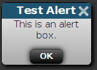

gateone.js¶
Gate One's JavaScript (gateone.js) is made up of several modules (aka plugins), each pertaining to a specific type of activity. These modules are laid out like so:
The properties and functions of each respective module are outlined below.
-
GateOne¶ The base object for all Gate One modules/plugins.
-
GateOne.Base¶ The Base module is mostly copied from MochiKit.
-
GateOne.Base.module(parent, name, version[, deps])¶ Creates a new name module in a parent namespace. This function will create a new empty module object with __name__, __version__, toString and __repr__ properties. It will also verify that all the strings in deps are defined in parent, or an error will be thrown.
Arguments: - parent -- The parent module or namespace (object).
- name -- A string representing the new module name.
- version -- The version string for this module (e.g. "1.0").
- deps -- An array of module dependencies, as strings.
The following example would create a new object named, "Net", attach it to the
GateOneobject, at version "1.0", withGateOne.BaseandGateOne.Utilsas dependencies:>>> GateOne.Base.module(GateOne, 'Net', '1.0', ['Base', 'Utils']); >>> GateOne.Net.__repr__(); "[GateOne.Net 1.0]" >>> GateOne.Net.NAME; "GateOne.Net"
-
GateOne.Base.superSandbox(name, dependencies, func)¶ A sandbox to wrap JavaScript which will delay-repeat loading itself if dependencies are not met. If dependencies cannot be found by the time specified in
GateOne.Base.dependencyTimeoutan exception will be thrown. Here's an example of how to use this function:GateOne.Base.superSandbox("GateOne.ExampleApp", ["GateOne.Terminal"], function(window, undefined) { "use strict"; // Don't forget this! var stuff = "Put your code here". });
The above example would ensure that
GateOne.Terminalis loaded before the contents of the superSandboxed function are loaded.Note
Sandboxed functions are always passed the
windowobject as the first argument.You can put whatever globals you like in the dependencies; they don't have to be GateOne modules. Here's another example:
// Require underscore.js and jQuery: GateOne.Base.superSandbox("GateOne.ExampleApp", ["_", "jQuery"], function(window, undefined) { "use strict"; var stuff = "Put your code here". });
Name: Name of the wrapped function. It will be used to call any init()orpostInit()functions. If you just want dependencies checked you can just pass any unique string.Dependencies: An array of strings containing the JavaScript objects that must be present in the global namespace before we load the contained JavaScript. Func: A function containing the JavaScript code to execute as soon as the dependencies are available.
-
GateOne.Base.update(self, obj[, obj2[, objN]])¶ Mutate self by replacing its key:value pairs with those from other object(s). Key:value pairs from later objects will overwrite those from earlier objects.
If self is
null, a new Object instance will be created and returned.Warning
This mutates and returns self.
Arguments: - self (object) -- The object you wish to mutate with obj.
- obj -- Any given JavaScript object (e.g. {}).
Returns: self
-
-
GateOne.i18n¶ A module to store and retrieve localized translations of strings.
-
GateOne.i18n.gettext(stringOrArray)¶ Returns a localized translation of stringOrArray if available. If stringOrArray is an array it will be joined into a single string via
join('').If no translation of stringOrArray is available the text will be returned as-is (or joined, in the case of an Array).
-
GateOne.i18n.registerTranslationAction(table)¶ Attached to the
go:register_translationWebSocket action; stores the translation table inGateOne.i18n.translations.
-
GateOne.i18n.setLocales(locales)¶ Tells the Gate One server to set the user's locale to locale. Example:
>>> GateOne.i18n.setLocales(['fr_FR', 'en-US', 'en']);
Note
Typically you'd pass
navigator.languagesto this function.
-
-
GateOne.prefs¶ This object holds all of Gate One's preferences. Both those things that are meant to be user-controlled (e.g.
theme) and those things that are globally configured (e.g.url). Applications and plugins can store their own preferences here.
-
GateOne.noSavePrefs¶ Properties in this object will get ignored when
GateOne.prefsis saved tolocalStorage
-
GateOne.Icons¶ All of Gate One's SVG icons are stored in here (nothing really special about it).
-
GateOne.init(prefs[, callback])¶ Initializes Gate One using the provided prefs. Also performs the initial authentication, performs compatibility checks, and sets up basic preferences.
If callback is provided it will be called after
GateOne.Net.connect()completes.
-
GateOne.initialize()¶ Called after
GateOne.init(), Sets up Gate One's graphical elements (panels and whatnot) and attaches events related to visuals (browser resize and whatnot).
-
GateOne.Utils¶ This module consists of a collection of utility functions used throughout Gate One. Think of it like a mini JavaScript library of useful tools.
-
GateOne.Utils.init()¶ Registers the following WebSocket actions:
go:save_file->GateOne.Utils.saveAsAction()go:load_style->GateOne.Utils.loadStyleAction()go:load_js->GateOne.Utils.loadJSAction()go:themes_list->GateOne.Utils.enumerateThemes()
-
GateOne.Utils.startBenchmark()¶ Put
GateOne.Utils.startBenchmark()at the beginning of any code you wish to benchmark (to see how long it takes) and callGateOne.Utils.stopBenchmark()when complete.
-
GateOne.Utils.stopBenchmark([msg])¶ Put
GateOne.Utils.stopBenchmark('optional descriptive message')at the end of any code where you've calledGateOne.Utils.startBenchmark().It will report how long it took to run the code (in the JS console) between
startBenchmark()andstopBenchmark()along with a running total of all benchmarks.
-
GateOne.Utils.getNode(nodeOrSelector)¶ Returns a DOM node if given a querySelector-style string or an existing DOM node (will return the node as-is).
Note
The benefit of this over just
document.querySelector()is that if it is given a node it will return the node as-is (so functions can accept both without having to worry about such things). SeeremoveElement()below for a good example.Arguments: - nodeOrSelector --
A querySelector string like
#some_element_idor a DOM node.
Returns: A DOM node or
nullif not found.Example:
>>> var goDivNode = GateOne.Utils.getNode('#gateone'); // Cache it for future lookups >>> GateOne.Utils.getEmDimensions('#gateone'); // This won't use the cached node {'w': 8, 'h': 15} >>> GateOne.Utils.getEmDimensions(goDivNode); // This uses the cached node {'w': 8, 'h': 15}
Both code examples above work because
getEmDimensions()usesgetNode()to return the node of a given argument. Because of this,getEmDimensions()doesn't require strict string or node arguments (one or the other) and can support both selector strings and nodes at the same time.- nodeOrSelector --
-
GateOne.Utils.getNodes(nodeListOrSelector)¶ Given a CSS querySelectorAll string (e.g. '.some_class') or NodeList (in case we're not sure), lookup the node using
document.querySelectorAll()and return the result (which will be a NodeList).Note
The benefit of this over just
document.querySelectorAll()is that if it is given a nodeList it will just return the nodeList as-is (so functions can accept both without having to worry about such things).Arguments: - nodeListOrSelector --
A querySelectorAll string like
.some_classor a NodeList.
Returns: A NodeList or
[](an empty Array) if not found.Example:
>>> var panels = GateOne.Utils.getNodes('#gateone .panel');
Note
The nodeListOrSelector argument will be returned as-is if it is not a string. It will not actually be checked to ensure it is a proper NodeList.
- nodeListOrSelector --
-
GateOne.Utils.partial(fn)¶ Returns: A partially-applied function. Similar to MochiKit.Base.partial. Returns partially applied function.
Arguments: - fn (function) -- The function to ultimately be executed.
- arguments (arguments) -- Whatever arguments you want to be pre-applied to fn.
Example:
>>> var addNumbers = function(a, b) { return a + b; } >>> var addOne = GateOne.Utils.partial(addNumbers, 1); >>> addOne(3); 4
Note
This function can also be useful to simply save yourself a lot of typing. If you're planning on calling a function with the same parameters a number of times it is a good idea to use
partial()to create a new function with all the parameters pre-applied. Can make code easier to read too.
-
GateOne.Utils.keys(obj)¶ Returns an Array containing the keys (attributes) of the given obj
-
GateOne.Utils.items(obj)¶ Note
Copied from MochiKit.Base.items.
Returns an Array of
[propertyName, propertyValue]pairs for the given obj.Arguments: - obj (object) -- Any given JavaScript object.
Returns: Array
Example:
>>> GateOne.Utils.items(GateOne.terminals).forEach(function(item) { console.log(item) }); ["1", Object] ["2", Object]
Note
Can be very useful for debugging.
-
GateOne.Utils.startsWith(substr, str)¶ Returns true if str starts with substr.
Arguments: - substr (string) -- The string that you want to see if str starts with.
- str (string) -- The string you're checking substr against.
Returns: true/false
Examples:
>>> GateOne.Utils.startsWith('some', 'somefile.txt'); true >>> GateOne.Utils.startsWith('foo', 'somefile.txt'); false
-
GateOne.Utils.endsWith(substr, str)¶ Returns true if str ends with substr.
Arguments: - substr (string) -- The string that you want to see if str ends with.
- str (string) -- The string you're checking substr against.
Returns: true/false
Examples:
>>> GateOne.Utils.endsWith('.txt', 'somefile.txt'); true >>> GateOne.Utils.endsWith('.txt', 'somefile.svg'); false
-
GateOne.Utils.isArray(obj)¶ Returns true if obj is an Array.
Arguments: - obj (object) -- A JavaScript object.
Returns: true/false
Example:
>>> GateOne.Utils.isArray(GateOne.terminals['1'].screen); true
-
GateOne.Utils.isNodeList(obj)¶ Returns
trueif obj is a NodeList. NodeList objects come from DOM level 3 and are what is returned by some browsers when you execute functions like document.getElementsByTagName. This function lets us know if the Array-like object we've got is an actual NodeList (as opposed to an HTMLCollection or something else like an Array) or genericobject.Arguments: - obj (object) -- A JavaScript object.
Returns: true/false
Example:
>>> GateOne.Utils.isNodeList(document.querySelectorAll('.✈termline')); true
-
GateOne.Utils.isHTMLCollection(obj)¶ Returns true if obj is an HTMLCollection. HTMLCollection objects come from DOM level 1 and are what is returned by some browsers when you execute functions like document.getElementsByTagName. This function lets us know if the Array-like object we've got is an actual HTMLCollection (as opposed to a NodeList or just an Array).
Arguments: - obj (object) -- A JavaScript object.
Returns: true/false
Example:
>>> GateOne.Utils.isHTMLCollection(document.getElementsByTagName('pre')); true // Assuming Firefox here
Note
The result returned by this function will vary from browser to browser. Sigh.
-
GateOne.Utils.isElement(obj)¶ Returns true if obj is an HTMLElement.
Arguments: - obj (object) -- A JavaScript object.
Returns: true/false
Example:
>>> GateOne.Utils.isElement(GateOne.Utils.getNode('#gateone')); true
-
GateOne.Utils.removeElement(elem)¶ Removes the given elem from the DOM.
Arguments: - elem --
A querySelector string like
#some_element_idor a DOM node.
Example:
>>> GateOne.Utils.removeElement('#go_infocontainer');
- elem --
-
GateOne.Utils.createElement(tagname[, properties[, noprefix]])¶ A simplified version of MochiKit's createDOM function, it creates a tagname (e.g. "div") element using the given properties.
Arguments: - tagname (string) -- The type of element to create ("a", "table", "div", etc)
- properties (object) -- An object containing the properties which will be pre-attached to the created element.
- noprefix (boolean) -- If
true, will not prefix the created element ID withGateOne.prefs.prefix.
Returns: A node suitable for adding to the DOM.
Examples:
>>> myDiv = GateOne.Utils.createElement('div', {'id': 'foo', 'style': {'opacity': 0.5, 'color': 'black'}}); >>> myAnchor = GateOne.Utils.createElement('a', {'id': 'liftoff', 'href': 'http://liftoffsoftware.com/'}); >>> myParagraph = GateOne.Utils.createElement('p', {'id': 'some_paragraph'});
Note
createElementwill automatically applyGateOne.prefs.prefixto the 'id' of the created elements (if an 'id' was given).
-
GateOne.Utils.showElement(elem)¶ Shows the given element (if previously hidden via
hideElement()) by settingelem.style.display = 'block'.Arguments: - elem --
A querySelector string like
#some_element_idor a DOM node.
Example:
>>> GateOne.Utils.showElement('#go_icon_newterm');
- elem --
-
GateOne.Utils.hideElement(elem)¶ Hides the given element by setting
elem.style.display = 'none'.Arguments: - elem --
A querySelector string like
#some_element_idor a DOM node.
Example:
>>> GateOne.Utils.hideElement('#go_icon_newterm');
- elem --
-
GateOne.Utils.showElements(elems)¶ Shows the given elements (if previously hidden via
hideElement()orhideElements()) by settingelem.style.display = 'block'.Arguments: - elems --
A querySelectorAll string like
.some_element_class, a NodeList, or an array.
Example:
>>> GateOne.Utils.showElements('.pastearea');
- elems --
-
GateOne.Utils.hideElements(elems)¶ Hides the given elements by setting
elem.style.display = 'none'on all of them.Arguments: - elems --
A querySelectorAll string like
.some_element_class, a NodeList, or an array.
Example:
>>> GateOne.Utils.hideElements('.pastearea');
- elems --
-
GateOne.Utils.getSelText()¶ Returns: The text that is currently highlighted in the browser. Example:
>>> GateOne.Utils.getSelText(); "localhost" // Assuming the user had highlighted the word, "localhost"
-
GateOne.Utils.noop(a)¶ AKA "No Operation". Returns whatever is given to it (if anything at all). In other words, this function doesn't do anything and that's exactly what it is supposed to do!
Arguments: - a -- Anything you want.
Returns: a
Example:
>>> var functionList = {'1': GateOne.Utils.noop, '2': GateOne.Utils.noop};
Note
This function is most useful as a placeholder for when you plan to update something in-place later. In the event that something never gets replaced, you can be assured that nothing bad will happen if it gets called (no exceptions).
-
GateOne.Utils.toArray(obj)¶ Returns an actual Array() given an Array-like obj such as an HTMLCollection or a NodeList.
Arguments: - obj (object) -- An Array-like object.
Returns: Array
Example:
>>> var terms = document.getElementsByClassName(GateOne.prefs.prefix+'terminal'); >>> GateOne.Utils.toArray(terms).forEach(function(termObj) { GateOne.Terminal.closeTerminal(termObj.id.split('term')[1]); });
-
GateOne.Utils.isEven(someNumber)¶ Returns true if someNumber is even.
Arguments: - someNumber (number) -- A JavaScript object.
Returns: true/false
Example:
>>> GateOne.Utils.isEven(2); true >>> GateOne.Utils.isEven(3); false
-
GateOne.Utils.runPostInit()¶ Called by
GateOne.runPostInit(), iterates over the list of plugins inGateOne.loadedModulescalling theinit()function of each (if present). When that's done it does the same thing with each respective plugin'spostInit()function.
-
GateOne.Utils.cacheFileAction(fileObj[, callback])¶ Attached to the 'go:cache_file' WebSocket action; stores the given fileObj in the 'fileCache' database and calls callback when complete.
If fileObj['kind'] is 'html' the file will be stored in the 'html' table otherwise the file will be stored in the 'other' table.
-
GateOne.Utils.loadJSAction(message)¶ Loads a JavaScript file sent via the
go:load_jsWebSocket action into a <script> tag inside ofGateOne.prefs.goDiv(not that it matters where it goes).If message.cache is
falseor noCache is true, will not update the fileCache database with this incoming file.
-
GateOne.Utils.loadStyleAction(message[, noCache])¶ Loads the stylesheet sent via the
go:load_styleWebSocket action. The message is expected to be a JSON object that contains the following objects:result: Must be "Success" if delivering actual CSS. Anything else will be reported as an error in the JS console. css: Must be true.data: The actual stylesheet (the CSS). cache: If falsethe stylesheet will not be cached at the client (stored in the fileCache database).media: Optional: If provided this value will be used as the "media" attribute inside the created <style>tag.Example message object:
{ "result": "Success", "css": true, "data": ".someclass:hover {cursor: pointer;}", "media": "screen", "cache": true }
If called directly (as opposed to via the WebSocket action) the noCache
-
GateOne.Utils.loadTheme(theme)¶ Sends the
go:get_themeWebSocket action to the server asking it to send/sync/load the given theme.Arguments: - theme (string) -- The theme you wish to load.
Example:
>>> GateOne.Utils.loadTheme("white");
-
GateOne.Utils.enumerateThemes(messageObj)¶ Attached to the
go:themes_listWebSocket action; updates the preferences panel with the list of themes stored on the server.
-
GateOne.Utils.savePrefs(skipNotification)¶ Saves what's set in
GateOne.prefstolocalStorage[GateOne.prefs.prefix+'prefs']as JSON; skipping anything that's set inGateOne.noSavePrefs.Displays a notification to the user that preferences have been saved.
Arguments: - skipNotification (boolean) -- If
true, don't notify the user that prefs were just saved.
- skipNotification (boolean) -- If
-
GateOne.Utils.loadPrefs¶ Populates
GateOne.prefswith values fromlocalStorage[GateOne.prefs.prefix+'prefs'].
-
GateOne.Utils.xhrGet(url[, callback])¶ Performs a GET on the given url and if given, calls callback with the responseText as the only argument.
Arguments: - url (string) -- The URL to GET.
- callback (function) -- A function to call like so:
callback(responseText)
Example:
>>> var mycallback = function(responseText) { console.log("It worked: " + responseText) }; >>> GateOne.Utils.xhrGet('https://demo.example.com/static/about.html', mycallback); It worked: <!DOCTYPE html> <html> <head> ...
-
GateOne.Utils.isVisible(elem)¶ Returns true if node is visible (checks parent nodes recursively too). node may be a DOM node or a selector string.
Example:
>>> GateOne.Utils.isVisible('#'+GateOne.prefs.prefix+'pastearea1'); true
Note
Relies on checking elem.style.opacity and elem.style.display. Does not check transforms.
-
GateOne.Utils.getCookie(name)¶ Returns the given cookie (name).
Arguments: - name (string) -- The name of the cookie to retrieve.
Examples:
>>> GateOne.Utils.getCookie(GateOne.prefs.prefix + 'gateone_user'); // Returns the 'gateone_user' cookie
-
GateOne.Utils.setCookie(name, value, days)¶ Sets the cookie of the given name to the given value with the given number of expiration days.
Arguments: - name (string) -- The name of the cookie to retrieve.
- value (string) -- The value to set.
- days (number) -- The number of days the cookie will be allowed to last before expiring.
Examples:
>>> GateOne.Utils.setCookie('test', 'some value', 30); // Sets the 'test' cookie to 'some value' with an expiration of 30 days
-
GateOne.Utils.deleteCookie(name, path, domain)¶ Deletes the given cookie (name) from path for the given domain.
Arguments: - name (string) -- The name of the cookie to delete.
- path (string) -- The path of the cookie to delete (typically '/' but could be '/some/path/on/the/webserver' =).
- path -- The domain where this cookie is from (an empty string means "the current domain in window.location.href").
Example:
>>> GateOne.Utils.deleteCookie('gateone_user', '/', ''); // Deletes the 'gateone_user' cookie
-
GateOne.Utils.randomString(length[, chars])¶ Returns: A random string of the given length using the given chars. If chars is omitted the returned string will consist of lower-case ASCII alphanumerics.
Arguments: - length (int) -- The length of the random string to be returned.
- chars (string) -- Optional: a string containing the characters to use when generating the random string.
Example:
>>> GateOne.Utils.randomString(8); "oa2f9txf" >>> GateOne.Utils.randomString(8, '123abc'); "1b3ac12b"
-
GateOne.Utils.saveAs(blob, filename)¶ Saves the given blob (which must be a proper Blob object with data inside of it) as filename (as a file) in the browser. Just as if you clicked on a link to download it.
Note
This is amazingly handy for downloading files over the WebSocket.
-
GateOne.Utils.saveAsAction(message)¶ Note
This function is attached to the 'save_file' WebSocket action (in
GateOne.Net.actions) viaGateOne.Utils.init().Saves to disk the file contained in message. The message object should contain the following:
result: Either 'Success' or a descriptive error message. filename: The name we'll give to the file when we save it. data: The content of the file we're saving. mimetype: Optional: The mimetype we'll be instructing the browser to associate with the file (so it will handle it appropriately). Will default to 'text/plain' if not given.
-
GateOne.Utils.isPageHidden()¶ Returns
trueif the page (browser tab) is hidden (e.g. inactive). Returnsfalseotherwise.Example:
>>> GateOne.Utils.isPageHidden(); false
-
GateOne.Utils.createBlob(array, mimetype)¶ Returns a Blob() object using the given array and mimetype. If mimetype is omitted it will default to 'text/plain'. Optionally, array may be given as a string in which case it will be automatically wrapped in an array.
Arguments: - array (array) -- A string or array containing the data that the Blob will contain.
- mimetype (string) -- A string representing the mimetype of the data (e.g. 'application/javascript').
Returns: A Blob()
Note
The point of this function is favor the
Blob()function while maintaining backwards-compatibility with the deprecatedBlobBuilderinterface (for browsers that don't support Blob() yet).Example:
>>> var blob = GateOne.Utils.createBlob('some data here', 'text/plain);
-
GateOne.Utils.getQueryVariable(variable[, url])¶ Returns the value of a query string variable from
window.location.If no matching variable is found, returns undefined. Example:
>>> // Assume window.location.href = 'https://gateone/?foo=bar,bar,bar' >>> GateOne.Utils.getQueryVariable('foo'); 'bar,bar,bar'
Optionally, a url may be specified to perform the same evaluation on url insead of
window.location.
-
GateOne.Utils.removeQueryVariable(variable)¶ Removes the given query string variable from
window.location.hrefusingwindow.history.replaceState(). Leaving all other query string variables alone.Returns the new query string.
-
GateOne.Utils.insertAfter(newElement, targetElement)¶ The opposite of the DOM's built in
insertBefore()function; inserts the given newElement after targetElement.targetElement may be given as a pre-constructed node object or a querySelector-like string.
-
GateOne.Utils.debounce(func, wait, immediate)¶ A copy of the debounce function from the excellent underscore.js.
-
-
GateOne.Logging¶ Gate One's Logging module provides functions for logging to the console (or whatever destination you like) and supports multiple log levels:
Level Name Default Console Function 10 DEBUG console.debug()20 INFO console.log()30 WARNING console.warn()40 ERROR console.error()50 FATAL console.error()If a particular console function is unavailable the
console.log()function will be used as a fallback.Tip
You can add your own destinations; whatever you like! See the
GateOne.Logging.addDestination()function for details.Shortcuts:
There are various shortcut functions available to save some typing:
GateOne.Logging.logDebug()GateOne.Logging.logInfo()GateOne.Logging.logWarning()GateOne.Logging.logError()GateOne.Logging.logFatal()
It is recommended that you assign these shortcuts at the top of your code like so:
var logFatal = GateOne.Logging.logFatal, logError = GateOne.Logging.logError, logWarning = GateOne.Logging.logWarning, logInfo = GateOne.Logging.logInfo, logDebug = GateOne.Logging.logDebug;
That way you can just add "logDebug()" anywhere in your code and it will get logged appropriately to the default destinations (with a nice timestamp and whatnot).
-
GateOne.Logging.init()¶ Initializes logging by setting
GateOne.Logging.levelusing the value provided byGateOne.prefs.logLevel.GateOne.prefs.logLevelmay be given as a case-insensitive string or an integer.Also, if
GateOne.prefs.logToServerisfalseGateOne.Logging.logToConsole()will be removed fromGateOne.Logging.destinations.
-
GateOne.Logging.setLevel(level)¶ Sets the log level to an integer if the given a string (e.g. "DEBUG"). Sets it as-is if it's already a number. Examples:
>>> GateOne.Logging.setLevel(10); // Set log level to DEBUG >>> GateOne.Logging.setLevel("debug") // Same thing; they both work!
-
GateOne.Logging.log(msg[, level[, destination]])¶ Logs the given msg using all of the functions in
GateOne.Logging.destinationsafter being prepended with the date and a string indicating the log level (e.g. "692011-10-25 10:04:28 INFO <msg>") if level is determined to be greater than the value ofGateOne.Logging.level. If the given level is not greater thanGateOne.Logging.levelmsg will be discarded (noop).level can be provided as a string, an integer, null, or be left undefined:
- If an integer, an attempt will be made to convert it to a string using
GateOne.Logging.levelsbut if this fails it will use "lvl:<integer>" as the level string. - If a string, an attempt will be made to obtain an integer value using
GateOne.Logging.levelsotherwiseGateOne.Logging.levelwill be used (to determine whether or not the message should actually be logged). - If undefined, the level will be set to
GateOne.Logging.level. - If
null(as opposed to undefined), level info will not be included in the log message.
If destination is given (must be a function) it will be used to log messages like so:
destination(message, levelStr). The usual conversion of msg to message will apply.Any additional arguments after destination will be passed directly to that function.
- If an integer, an attempt will be made to convert it to a string using
-
GateOne.Logging.logToConsole(msg, level)¶ Logs the given msg to the browser's JavaScript console. If level is provided it will attempt to use the appropriate console logger (e.g. console.warn()).
Note
The original version of this function is from:
MochiKit.Logging.Logger.prototype.logToConsole.
-
GateOne.Logging.logToServer(msg[, level])¶ Sends the given log msg to the Gate One server. Such messages will end up in 'logs/gateone-client.log'.
-
GateOne.Logging.addDestination(name, dest)¶ Creates a new log destination named, name that calls function dest like so:
>>> dest(message);
Example usage:
>>> GateOne.Logging.addDestination('screen', GateOne.Visual.displayMessage);
Note
The above example is kind of fun. Try it in your JavaScript console!
Tip
With the right function you can send client log messages anywhere.
-
GateOne.Logging.removeDestination(name)¶ Removes the given log destination (name) from
GateOne.Logging.destinations
-
GateOne.Logging.dateFormatter(dateObj)¶ Converts a Date() object into string suitable for logging. Example:
>>> GateOne.Logging.dateFormatter(new Date()); "2013-08-15 08:45:41"
-
GateOne.Net¶ Just about all of Gate One's communications with the server are handled inside this module. It contains all the functions and properties to deal with setting up the WebSocket and issuing/receiving commands over it. The most important facet of
GateOne.NetisGateOne.Net.actionswhich holds the mapping of what function maps to which command. More info onGateOne.Net.actionsis below.-
GateOne.Net.actions¶ This is where all of Gate One's WebSocket protocol actions are assigned to functions. Here's how they are defined by default:
Action Function go:gateone_userGateOne.User.storeSessionAction()go:load_cssGateOne.Visual.CSSPluginAction()go:load_styleGateOne.Utils.loadStyleAction()go:logGateOne.Net.log()go:noticeGateOne.Visual.serverMessageAction()go:user_messageGateOne.Visual.userMessageAction()go:pingGateOne.Net.ping()go:pongGateOne.Net.pong()go:reauthenticateGateOne.Net.reauthenticate()go:save_fileGateOne.Utils.saveAsAction()go:set_usernameGateOne.User.setUsernameAction()go:timeoutGateOne.Terminal.timeoutAction()Note
Most of the above is added via
addAction()inside of each respective module'sinit()function.For example, if we execute
GateOne.Net.ping(), this will send a message over the WebSocket like so:GateOne.ws.send(JSON.stringify({'ping': timestamp}));
The GateOne server will receive this message and respond with a
pongmessage that looks like this (Note: Python code below):message = {'pong': timestamp} # The very same timestamp we just sent via GateOne.Net.ping() self.write_message(json_encode(message))
When GateOne.Net receives a message from the server over the WebSocket it will evaluate the object it receives as
{action: message}and call the matching action inGateOne.Net.actions. In this case, our action "pong" matchesGateOne.Net.actions['pong']so it will be called like so:GateOne.Net.actions['pong'](message);
Plugin authors can add their own arbitrary actions using
GateOne.Net.addAction(). Here's an example taken from the SSH plugin:GateOne.Net.addAction('sshjs_connect', GateOne.SSH.handleConnect); GateOne.Net.addAction('sshjs_reconnect', GateOne.SSH.handleReconnect);
If no action can be found for a message it will be passed to
GateOne.Visual.displayMessage()and displayed to the user like so:GateOne.Visual.displayMessage('Message From Server: ' + <message>);
-
GateOne.Net.init()¶ Assigns the
go:ping_timeoutevent (which just displays a message to the user indicating as such).
-
GateOne.Net.sendChars()¶ Deprecated since version 1.2: Use
GateOne.Terminal.sendChars()instead.
-
GateOne.Net.sendString()¶ Deprecated since version 1.2: Use
GateOne.Terminal.sendString()instead.
-
GateOne.Net.log(message)¶ Arguments: - message (string) -- The message received from the Gate One server.
This function can be used in debugging
GateOne.Net.actions; it logs whatever message is received from the Gate One server:GateOne.Logging.logInfo(message)(which would equate to console.log under most circumstances).When developing a new action, you can test out or debug your server-side messages by attaching the respective action to
GateOne.Net.log()like so:GateOne.Net.addAction('my_action', GateOne.Net.log);
Then you can view the exact messages received by the client in the JavaScript console in your browser.
Tip
Executing
GateOne.Logging.setLevel('DEBUG')in your JS console will also log all incoming messages from the server (though it can be a bit noisy).
-
GateOne.Net.ping([logLatency])¶ Sends a 'ping' to the server over the WebSocket. The response from the server is handled by
GateOne.Net.pong().If a response is not received within a certain amount of time (milliseconds, controlled via
GateOne.prefs.pingTimeout) the WebSocket will be closed and ago:ping_timeoutevent will be triggered.If logLatency is
true(the default) the latency will be logged to the JavaScript console viaGateOne.Logging.logInfo().Note
The default value for
GateOne.prefs.pingTimeoutis 5 seconds. You can change this setting via thejs_initoption like so:--js_init='{pingTimeout: "5000"}'(command line) or in your 10server.conf ("js_init": "{pingTimeout: '5000'}").
-
GateOne.Net.pong(timestamp)¶ Arguments: - timestamp (string) -- Expected to be the output of
new Date().toISOString()(as generated byping()).
Simply logs timestamp using
GateOne.Logging.logInfo()and includes a measurement of the round-trip time in milliseconds.- timestamp (string) -- Expected to be the output of
-
GateOne.Net.reauthenticate()¶ Called when the Gate One server wants us to re-authenticate our session (e.g. our cookie expired). Deletes the 'gateone_user' cookie and reloads the current page.
This will force the client to re-authenticate with the Gate One server.
To disable the automatic reload set
GateOne.Net.reauthForceReload = false.
-
GateOne.Net.sendDimensions()¶ Deprecated since version 1.2: Use
GateOne.Terminal.sendDimensions()instead.
-
GateOne.Net.blacklisted(msg)¶ Called when the server tells us the client has been blacklisted (i.e for abuse). Sets
GateOne.Net.connect = GateOne.Utils.noop;so a new connection won't be attempted after being disconnected. It also displays a message to the user from the server.
-
GateOne.Net.connectionError(msg)¶ Called when there's an error communicating over the WebSocket... Displays a message to the user indicating there's a problem, logs the error (using
logError()), and sets a five-second timeout to attempt reconnecting.This function is attached to the WebSocket's
oncloseevent and shouldn't be called directly.
-
GateOne.Net.sslError()¶ Called when we fail to connect due to an SSL error (user must accept the SSL certificate). It displays a message to the user that gives them the option to open up a new page where they can accept the SSL certificate (it automatically redirects them back to the current page).
-
GateOne.Net.connect([callback])¶ Opens a connection to the WebSocket defined in
GateOne.prefs.urland stores it asGateOne.ws. Once connectedGateOne.initialize()will be called.If an error is encountered while trying to connect to the WebSocket,
GateOne.Net.connectionError()will be called to notify the user as such. After five seconds, if a connection has yet to be connected successfully it will be assumed that the user needs to accept the Gate One server's SSL certificate. This will invoke call toGateOne.Net.sslError()which will redirect the user to theaccept_certificate.htmlpage on the Gate One server. Once that page has loaded successfully (after the user has clicked through the interstitial page) the user will be redirected back to the page they were viewing that contained Gate One.Note
This function gets called by
GateOne.init()and there's really no reason why it should be called directly by anything else.
-
GateOne.Net.onClose(evt)¶ Attached to
GateOne.ws.onclose(); called when the WebSocket is closed.If
GateOne.Net.connectionProblemistrueGateOne.Net.connectionError()will be called.
-
GateOne.Net.disconnect([reason])¶ Closes the WebSocket and clears all processes (timeouts/keepalives) that watch the state of the connection.
If a reason is given it will be passed to the WebSocket's
close()function as the only argument.Note
The reason feature of WebSockets does not appear to be implemented in any browsers (yet).
-
GateOne.Net.onOpen([callback])¶ This gets attached to
GateOne.ws.onopeninside ofconnect(). It clears any error message that might be displayed to the user and asks the server to send us the (currently-selected) theme CSS and all plugin JS/CSS. It then sends an authentication message (thego:authenticateWebSocket action) and callsGateOne.Net.ping()after a short timeout (to let things settle down lest they interfere with the ping time calculation).Lastly, it fires the
go:connnection_establishedevent.
-
GateOne.Net.onMessage(evt)¶ Arguments: - event (event) --
A WebSocket event object as passed by the 'message' event.
This gets attached to
GateOne.ws.onmessageinside ofconnect(). It takes care of decoding (JSON) messages sent from the server and calling any matchingactions. If no matching action can be found insideevent.datait will fall back to passing the message directly toGateOne.Visual.displayMessage().- event (event) --
-
GateOne.Net.timeoutAction()¶ Writes a message to the screen indicating a session timeout has occurred (on the server) and closes the WebSocket.
-
GateOne.Net.addAction(name, func)¶ Arguments: - name (string) -- The name of the action we're going to attach func to.
- func (function) --
The function to be called when an action arrives over the WebSocket matching name.
Adds an action to the
GateOne.Net.actionsobject.Example:
>>> GateOne.Net.addAction('sshjs_connect', GateOne.SSH.handleConnect);
-
GateOne.Net.setTerminal()¶ Deprecated since version 1.2: Use
GateOne.Terminal.setTerminal()instead.
-
GateOne.Net.killTerminal()¶ Deprecated since version 1.2: Use
GateOne.Terminal.killTerminal()instead.
-
GateOne.Net.refresh()¶ Deprecated since version 1.2: Use
GateOne.Terminal.refresh()instead.
-
GateOne.Net.fullRefresh()¶ Deprecated since version 1.2: Use
GateOne.Terminal.fullRefresh()instead.
-
GateOne.Net.getLocations()¶ Asks the server to send us a list of locations via the
go:get_locationsWebSocket action. Literally:>>> GateOne.ws.send(JSON.stringify({'go:get_locations': null}));
This will ultimately result in
GateOne.Net.locationsAction()being called.
-
GateOne.Net.locationsAction()¶ Attached to the
go:locationsWebSocket action. SetsGateOne.locationsto locations which should be an object that looks something like this:{"default": {"terminal":{ "1":{ "created":1380590438000, "command":"SSH", "title":"user@enterprise: ~" }, "2":{ "created":1380590633000, "command":"login", "title":"root@enterprise: /var/log" }, "x11":{ "1":{ "created":1380590132000, "command":"google-chrome-unstable", "title":"Liftoff Software | Next stop, innovation - Google Chrome" }, "2":{ "created":1380591192000, "command":"subl", "title":"~/workspace/SuperSandbox/SuperSandbox.js - Sublime Text (UNREGISTERED)" }, }, "transfer":{ "1":{ "created":1380590132000, "command":"Unknown", "title":"From: bittorrent://kubuntu-13.04-desktop-armhf+omap4.img.torrent To: sftp://user@enterprise/home/user/downloads/ To: sftp://upload@ec2inst22/ubuntu-isos/ To: user@enterprise (client)" }, } }
-
GateOne.Net.setLocation(location)¶ Arguments: - location (string) -- A string containing no spaces.
Sets
GateOne.locationto location and sends a message (thego:set_locationWebSocket action) to the Gate One server telling it to change the current location to location.
-
-
GateOne.Visual¶ This module contains all of Gate One's visual effect functions. It is just like
GateOne.Utilsbut specific to visual effects and DOM manipulations.-
GateOne.Visual.goDimensions¶ Stores the dimensions of the
GateOne.prefs.goDivelement in the form of{w: '800', h: '600'}where 'w' and 'h' represent the width and height in pixels. It is used by several functions in order to calculate how far to slide terminals, how many rows and columns will fit, etc.Registers the following WebSocket actions:
Action Function go:noticeGateOne.Visual.serverMessageAction()go:user_messageGateOne.Visual.userMessageAction()
-
GateOne.Visual.init()¶ Adds the 'grid' icon to the toolbar for users to click on to bring up/down the grid view.
Registers the following Gate One events:
Event Function go:switch_workspaceGateOne.Visual.slideToWorkspace()go:switch_workspaceGateOne.Visual.locationsCheck()go:cleanup_workspacesGateOne.Visual.cleanupWorkspaces()Registers the following DOM events:
Element Event Function windowresizeGateOne.Visual.updateDimensions()
-
GateOne.Visual.postInit()¶ Sets up our default keyboard shortcuts and opens the application chooser if no other applications have opened themselves after a short timeout (500ms).
Registers the following keyboard shortcuts:
Function Shortcut New Workspace Control-Alt-NClose Workspace Control-Alt-WShow Grid Control-Alt-GSwitch to the workspace on the left Shift-LeftArrowSwitch to the workspace on the right Shift-RightArrowSwitch to the workspace above Shift-UpArrowSwitch to the workspace below Shift-DownArrow
-
GateOne.Visual.locationsPanel()¶ Creates the locations panel and adds it to
GateOne.node(hidden by default).
-
GateOne.Visual.showLocationsIcon()¶ Creates then adds the location panel icon to the toolbar.
-
GateOne.Visual.showLocationsIcon() Removes the locations panel icon from the toolbar.
-
GateOne.Visual.locationsCheck(workspaceNum)¶ Will add or remove the locations panel icon to/from the toolbar if the application residing in the current workspace supports locations.
-
GateOne.Visual.appChooser([where])¶ Creates a new application chooser (akin to a browser's "new tab tab") that displays the application selection screen (and possibly other things in the future).
If where is undefined a new workspace will be created and the application chooser will be placed there. If where is
falsethe new application chooser element will be returned without placing it anywhere.Note
The application chooser can be disabled by setting
GateOne.prefs.showAppChooser = falseor by passing 'go_prefs={"showAppChooser":false}' via the URL query string. IfGateOne.prefs.showAppChooseris an integer the application chooser will be prevented from being shown that many times before resuming the default behavior (shown).
-
GateOne.Visual.setTitle(title)¶ Sets the innerHTML of the '✈sideinfo' element to title.
Note
The location of the '✈sideinfo' is controlled by the theme but it is typically on the right-hand side of the window.
-
GateOne.Visual.updateDimensions()¶ Sets
GateOne.Visual.goDimensionsto the current width/height ofGateOne.prefs.goDiv. Typically called when the browser window is resized.>>> GateOne.Visual.updateDimensions();
Also sends the "go:set_dimensions" WebSocket action to the server so that it has a reference of the client's width/height as well as information about the size of the goDiv (usually #gateone) element and the size of workspaces.
-
GateOne.Visual.transitionEvent()¶ Returns the correct name of the 'transitionend' event for the current browser. Example:
>>> console.log(GateOne.Visual.transitionEvent()); // Pretend we're using Chrome 'webkitTransitionEnd' >>> console.log(GateOne.Visual.transitionEvent()); // Pretend we're using Firefox 'transitionend'
-
GateOne.Visual.applyTransform(obj, transform[, callback1[, callbackN]])¶ Arguments: - obj --
A querySelector string like
#some_element_id, a DOM node, an Array of DOM nodes, an HTMLCollection, or a NodeList. - transform -- A CSS3 transform function such as
scale()ortranslate(). - callbacks -- Any number of functions can be supplied to be called back after the transform is applied. Each callback will be called after the previous one has completed. This allows the callbacks to be chained one after the other to create animations. (see below)
This function is Gate One's bread and butter: It applies the given CSS3 transform to obj. obj can be one of the following:
- A querySelector -like string (e.g. "#some_element_id").
- A DOM node.
- An Array or an Array-like object containing DOM nodes such as HTMLCollection or NodeList (it will apply the transform to all of them).
The transform should be just the actual transform function (e.g.
scale(0.5)).applyTransform()will take care of applying the transform according to how each browser implements it. For example:>>> GateOne.Visual.applyTransform('#somediv', 'translateX(500%)');
...would result in
#somedivgetting styles applied to it like this:#somediv { -webkit-transform: translateX(500%); // Chrome/Safari/Webkit-based stuff -moz-transform: translateX(500%); // Mozilla/Firefox/Gecko-based stuff -o-transform: translateX(500%); // Opera -ms-transform: translateX(500%); // IE9+ -khtml-transform: translateX(500%); // Konqueror transform: translateX(500%); // Some day this will be all that is necessary }
Optionally, any amount of callback functions may be provided which will be called after each transform (aka transition) completes. These callbacks will be called in a chain with the next callback being called after the previous one is complete. Example:
>>> // Chain three moves of #gateone; each waiting for the previous transition to complete before continuing in the chain: >>> GateOne.Visual.applyTransform(GateOne.node, 'translateX(-2%)', function() { GateOne.Visual.applyTransform(GateOne.node, 'translateX(2%)') }, function() { GateOne.Visual.applyTransform(GateOne.node, ''); }, function() { console.log('transition chain complete'); });
- obj --
-
GateOne.Visual.applyStyle(elem, style)¶ Arguments: - elem --
A querySelector string like
#some_element_idor a DOM node. - style -- A JavaScript object holding the style that will be applied to elem.
A convenience function that allows us to apply multiple style changes in one go. For example:
>>> GateOne.Visual.applyStyle('#somediv', {'opacity': 0.5, 'color': 'black'});
- elem --
-
GateOne.Visual.getTransform(elem)¶ Arguments: - elem (number) --
A querySelector string ID or a DOM node.
Returns the transform string applied to the style of the given elem
>>> GateOne.Visual.getTransform('#go_term1_pre'); "translateY(-3px)"
- elem (number) --
-
GateOne.Visual.togglePanel(panel[, callback])¶ Toggles the given panel in or out of view. If other panels are open at the time, they will be closed. If panel evaluates to false, all open panels will be closed.
This function also has some events that can be hooked into:
- When the panel is toggled out of view:
GateOne.Events.trigger("go:panel_toggle:out", panelElement) - When the panel is toggled into view:
GateOne.Events.trigger("go:panel_toggle:in", panelElement)
You can hook into these events like so:
>>> GateOne.Events.on("go:panel_toggle:in", myFunc); // When panel is toggled into view >>> GateOne.Events.on("go:panel_toggle:out", myFunc); // When panel is toggled out of view
If a callback is given it will be called after the panel has completed being toggled in (i.e. after animations have completed).
- When the panel is toggled out of view:
-
GateOne.Visual.displayMessage(message[, timeout[, removeTimeout[, id]]])¶ Arguments: - message (string) -- The message to display.
- timeout (integer) -- Milliseconds; How long to display the message before starting the removeTimeout timer. Default: 1000.
- removeTimeout (integer) -- Milliseconds; How long to delay before calling
GateOne.Utils.removeElement()on the message DIV. Default: 5000. - id (string) -- The ID to assign the message DIV. Default:
GateOne.prefs.prefix+"notice". - noLog (boolean) -- If set to
truethe message will not be logged.

Displays message to the user via a transient pop-up DIV that will appear inside
GateOne.prefs.goDiv. How long the message lasts can be controlled via timeout and removeTimeout (which default to 1000 and 5000, respectively).If id is given, it will be prefixed with
GateOne.prefs.prefixand used as the DIV ID for the pop-up. i.e.GateOne.prefs.prefix+id. The default isGateOne.prefs.prefix+"notice".>>> GateOne.Visual.displayMessage('This is a test.');
Note
The default is to display the message in the lower-right corner of
GateOne.prefs.goDivbut this can be controlled via CSS.
-
GateOne.Visual.handleVisibility(e)¶ This function gets called whenever a tab connected to Gate One becomes visible or invisible. Triggers the
go:visibleandgo:invisibleevents.
-
GateOne.Visual.newWorkspace()¶ Creates a new workspace on the grid and returns the DOM node that is the new workspace.
If the currently-selected workspace happens to be the application chooser it will be emptied and returned instead of creating a new one.
-
GateOne.Visual.closeWorkspace(workspace)¶ Removes the given workspace from the 'gridwrapper' element and triggers the
go:close_workspaceevent.If message (string) is given it will be displayed to the user when the workspace is closed.
Note
If you're writing an application for Gate One you'll definitely want to attach a function to the
go:close_workspaceevent to close your application.
-
GateOne.Visual.switchWorkspace(workspace)¶ Triggers the
go:switch_workspaceevent which by default callsGateOne.Visual.slideToWorkspace().Tip
If you wish to use your own workspace-switching animation just write your own function to handle it and call
GateOne.Events.off('go:switch_workspace', GateOne.Visual.slideToWorkspace); GateOne.Events.on('go:switch_workspace', yourFunction);
-
GateOne.Visual.cleanupWorkspaces()¶ This gets attached to the 'go:cleanup_workspaces' event which should be triggered by any function that may leave a workspace empty. It walks through all the workspaces and removes any that are empty.
For example, let's say your app just removed itself from the workspace as a result of a server-controlled action (perhaps a BOFH killed the user's process). At the end of your
closeMyApp()function you want to put this:GateOne.Events.trigger("go:cleanup_workspaces");
Note
Make sure you trigger the event instead of calling this function directly so that other attached functions can do their part.
Why is this mechanism the opposite of everything else where you call the function and that function triggers its associated event? Embedded mode, of course! In embedded mode the parent web page may use something other than workspaces (e.g. tabs). In embedded mode this function never gets attached to thego:cleanup_workspacesevent so this function will never get called. This allows the page embedding Gate One to attach its own function to this event to perform an equivalent action (for whatever workspace-like mechanism it is using).
-
GateOne.Visual.relocateWorkspace(workspace, location)¶ Relocates the given workspace (number) to the given location by firing the
go:relocate_workspaceevent and then closing the workspace (if not already closed). The given workspace and location will be passed to the event as the only arguments.The 'data-application' attribute of the DOM node associated with the given workspace will be used to determine whether or not the application running on the workspace is relocatable. It does this by checking the matching application's '__appinfo__.relocatable' attribute.
Applications that support relocation must ensure that they set the appropriate 'data-application' attribute on the workspace if they create workspaces on their own.
-
GateOne.Visual.slideToWorkspace(workspace)¶ Slides the view to the given workspace. If
GateOne.Visual.noResetis true, don't reset the grid before switching.
-
GateOne.Visual.stopIndicator(direction)¶ Displays a visual indicator (appearance determined by theme) that the user cannot slide in given direction. Example:
>>> GateOne.Visual.stopIndicator('left');
The given direction may be one of: left, right, up, down.
-
GateOne.Visual.slideLeft()¶ Slides to the workspace left of the current view.
-
GateOne.Visual.slideRight()¶ Slides to the workspace right of the current view.
-
GateOne.Visual.slideDown()¶ Slides the view downward one workspace by pushing all the others up.
-
GateOne.Visual.slideUp()¶ Slides the view downward one workspace by pushing all the others down.
-
GateOne.Visual.resetGrid(animate)¶ Places all workspaces in their proper position in the grid. By default this happens instantly with no animations but if animate is
trueCSS3 transitions will take effect.
-
GateOne.Visual.gridWorkspaceDragStart(e)¶ Called when the user starts dragging a workspace in grid view; creates drop targets above each workspace and sets up the 'dragover', 'dragleave', and 'drop' events.
This function is also responsible for creating the thumbnail of the workspace being dragged.
-
GateOne.Visual.gridWorkspaceDragOver(e)¶ Attached to the various drop targets while a workspace is being dragged in grid view; sets the style of the drop target to indicate to the user that the workspace can be dropped there.
-
GateOne.Visual.gridWorkspaceDragLeave(e)¶ Attached to the various drop targets while a workspace is being dragged in grid view; sets the background color of the drop target back to 'transparent' to give the user a clear visual indiciation that the drag is no longer above the drop target.
-
GateOne.Visual.gridWorkspaceDrop(e)¶ Attached to the various drop targets while a workspace is being dragged in grid view; handles the 'drop' of a workspace on to another. Will swap the dragged workspace with the one to which it was dropped by calling
GateOne.Visual.swapWorkspaces()
-
GateOne.Visual.swapWorkspaces(ws1, ws2)¶ Swaps the location of the given workspaces in the grid and fires the
go:swapped_workspacesevent with ws1 and ws2 as the arguments.Ws1 number: The workspace number. Ws2 number: The other workspace number.
-
GateOne.Visual.toggleGridView([goBack])¶ Brings up the workspace grid view or returns to full-size.
If goBack is false, don't bother switching back to the previously-selected workspace
-
GateOne.Visual.createGrid(id, workspaceNames)¶ Creates a container for all the workspaces and optionally pre-creates workspaces using workspaceNames.
id will be the ID of the resulting grid (e.g. "gridwrapper").
workspaceNames is expected to be a list of DOM IDs.
-
GateOne.Visual.serverMessageAction(message)¶ Attached to the
go:noticeWebSocket action; displays a given message from the Gate One server as a transient pop-up usingGateOne.Visual.displayMessage().
-
GateOne.Visual.userMessageAction(message)¶ Attached to the
go:user_messageWebSocket action; displays a given message as a transient pop-up usingGateOne.Visual.displayMessage().Note
This will likely change to include/use additional metadata in the future (such as: from, to, etc)
-
GateOne.Visual.dialog(title, content[, options])¶ Creates an in-page dialog with the given title and content. Returns a function that will close the dialog when called.
Dialogs can be moved around and closed at-will by the user with a clearly visible title bar that is always present.
All dialogs are placed within the
GateOne.prefs.goDivcontainer but have their position set to 'fixed' so they can be moved anywhere on the page (even outside of the container where Gate One resides).Arguments: - title (string) -- Will appear at the top of the dialog.
- content (stringOrNode) -- String or JavaScript DOM node - The content of the dialog.
- options (object) -- An associative array of parameters that change the look and/or behavior of the dialog. See below.
Options
events: An object containing DOM events that will be attached to the dialog node. Example: {'mousedown': someFunction}. There are a few special/simulated events of which you may also attach: 'focused', 'closed', 'opened', 'resized', and 'moved'. Except for 'close', these special event functions will be passed the dialog node as the only argument.resizable: If set to falsethe dialog will not be resizable (all dialogs are resizable by default). Note that if a dialog may not be resized it will also not be maximizable.maximizable: If set to falsethe dialog will not have a maximize icon.minimizable: If set to falsethe dialog will not have a minimize icon.maximize: Open the dialog maximized. above: If set to truethe dialog will be kept above others.data: (object) If given, any contained properties will be set as 'data-*' attributes on the dialogContainer. where: If given, the dialog will be placed here (DOM node or querySelector-like string) and will only be able to movable within the parent element. Otherwise the dialog will be appended to the Gate One container ( GateOne.node) and will be movable anywhere on the page.noEsc: If truethe dialog will not watch for the ESC key to close itself.noTransitions: If trueCSS3 transitions will not be enabled for this dialog.class: Any additional CSS classes you wish to add to the dialog (space-separated). style: Any CSS you wish to apply to the dialog. Example: {'style': {'width': '50%', 'height': '25%'}}
-
GateOne.Visual.alert(title, message[, callback])¶ Arguments: - title (string) -- Title of the dialog that will be displayed.
- message -- An HTML-formatted string or a DOM node; Main content of the alert dialog.
- callback (function) -- A function that will be called after the user clicks "OK".
Displays a dialog using the given title containing the given message along with an OK button. When the OK button is clicked, callback will be called.
>>> GateOne.Visual.alert('Test Alert', 'This is an alert box.');
Note
This function is meant to be a less-intrusive form of JavaScript's alert().
-
GateOne.Visual.showDock(name)¶ Opens up the given name for the user to view. If the dock does not already exist it will be created and added to the toolbar.
-
GateOne.Visual.toggleOverlay()¶ Toggles the overlay that visually indicates whether or not Gate One is ready for input. Normally this function gets called automatically by
GateOne.Input.capture()andGateOne.Input.disableCapture()which are attached tomousedownandblurevents, respectively.
-
GateOne.Visual.enableOverlay()¶ Displays an overlay above Gate One on the page that 'greys it out' to indicate it does not have focus. If the overlay is already present it will be left as-is.
The state of the overlay is tracked via the
GateOne.Visual.overlayvariable.
-
GateOne.Visual.disableOverlay()¶ Removes the overlay above Gate One (if present).
The state of the overlay is tracked via the
GateOne.Visual.overlayvariable.
-
-
GateOne.Storage¶ An object for opening and manipulating IndexedDB databases with fallback to localStorage.
-
GateOne.Storage.dbObject¶ Arguments: - DB (string) -- A string representing the name of the database you want to open.
Returns a new object that can be used to store and retrieve data stored in the given database. Normally you'll get access to this object through the
GateOne.Storage.openDB()function (it gets passed as the argument to your callback).-
GateOne.Storage.dbObject.get(storeName, key, callback)¶ Retrieves the object matching the given key in the given object store (storeName) and calls callback with the result.
-
GateOne.Storage.dbObject.put(storeName, value[, callback])¶ Adds value to the given object store (storeName). If given, calls callback with value as the only argument.
-
GateOne.Storage.dbObject.del(storeName, key[, callback])¶ Deletes the object matching key from the given object store (storeName). If given, calls callback when the transaction is complete.
-
GateOne.Storage.dbObject.dump(storeName, callback)¶ Retrieves all objects in the given object store (storeName) and calls callback with the result.
-
GateOne.Storage.init()¶ Doesn't do anything (most init stuff for this module needs to happen before everything else loads).
-
GateOne.Storage.cacheReady()¶ Called when the fileCache DB has completed openining/initialization. Just sets
GateOne.Storage.fileCacheReadytotrue.
-
GateOne.Storage.cacheJS(fileObj)¶ Stores the given fileObj in the 'fileCache' database in the 'js' store.
Note
Normally this only gets run from
GateOne.Utils.loadJSAction().
-
GateOne.Storage.uncacheJS(fileObj)¶ Removes the given fileObj from the cache (if present).
Note
This will fail silently if the given fileObj does not exist in the cache.
-
GateOne.Storage.cacheStyle(fileObj, kind)¶ Stores the given fileObj in the 'fileCache' database in the store associated with the given kind of stylesheet. Stylesheets are divided into different 'kind' categories because some need special handling (e.g. themes need to be hot-swappable).
Note
Normally this only gets run from
GateOne.Utils.loadStyleAction().
-
GateOne.Storage.uncacheStyle(fileObj, kind)¶ Removes the given fileObj from the cache matching kind (if present). The kind argument must be one of 'css', 'theme', or 'print'.
Note
This will fail silently if the given fileObj does not exist in the cache.
-
GateOne.Storage.cacheExpiredAction(message)¶ Attached to the
go:cache_expiredWebSocket action; given a list of message['filenames'], removes them from the file cache.
-
GateOne.Storage.fileCheckAction(message)¶ This gets attached to the
go:file_syncWebSocket action; given a list of file objects which includes their modification times (message['files']) it will either load the file from the 'fileCache' database or request the file be delivered via the (server-side) 'go:file_request' WebSocket action.Note
Expects the 'fileCache' database be open and ready (normally it gets opened/initialized in
GateOne.initialize()).
-
GateOne.Storage.onerror(e)¶ Attached as the errorback function in various storage operations; logs the given error (e).
-
GateOne.Storage._upgradeDB(trans[, callback])¶ DB version upgrade function attached to the
onupgradeneededevent. It creates our object store(s).If callback is given it will be called when the transaction is complete.
-
GateOne.Storage.openDB(DB[, callback[, model[, version]]])¶ Opens the given database (DB) for use and stores a reference to it as
GateOne.Storage.databases[DB].If callback is given, will execute it after the database has been opened successfuly.
If this is the first time we're opening this database a model must be given. Also, if the database already exists, the model argument will be ignored so it is safe to pass it with every call to this function.
If provided, the version of the database will be set. Otherwise it will be set to 1.
Example usage:
var model = {'BookmarksDB': {'bookmarks': {keyPath: "url"}, 'tags': {keyPath: "name"}}}; GateOne.Storage.openDB('somedb', function(dbObj) {console.log(dbObj);}, model); // Note that after this DB is opened the IDBDatabase object will be available via GateOne.Storage.databases['somedb']
-
GateOne.Storage.clearDatabase(DB[, storeName])¶ Clears the contents of the given storeName in the given database (DB). AKA "the nuclear option."
If a storeName is not given the whole database will be deleted.
-
-
GateOne.User¶ The User module is for things like logging out, synchronizing preferences with the server, and it is also meant to provide hooks for plugins to tie into so that actions can be taken when user-specific events occur.
The following WebSocket actions are attached to functions provided by
GateOne.User:Action Function go:gateone_userGateOne.User.storeSessionAction()go:set_usernameGateOne.User.setUsernameAction()go:applicationsGateOne.User.applicationsAction()go:user_listGateOne.User.userListAction()-
GateOne.User.init()¶ Adds the user's ID (aka UPN) to the prefs panel along with a logout link.
-
GateOne.User.workspaceApp(workspace)¶ Attached to the 'go:switch_workspace' event; sets
GateOne.User.activeApplicationto whatever application is attached to thedata-applicationattribute on the provided workspace.
-
GateOne.User.setActiveApp(app)¶ Sets
GateOne.User.activeApplicationthe given app.Note
The app argument is case-insensitive. For example, if you pass 'terminal' it will set the active application to 'Terminal' (which is the name inside
GateOne.User.applications).
-
GateOne.User.setUsernameAction(username)¶ Sets
GateOne.User.usernameto username. Also triggers thego:user_loginevent with the username as the only argument.Tip
If you want to call a function after the user has successfully loaded Gate One and authenticated attach it to the
go:user_loginevent.
-
GateOne.User.logout(redirectURL)¶ This function will log the user out by deleting all Gate One cookies and forcing them to re-authenticate. By default this is what is attached to the 'logout' link in the preferences panel.
If provided, redirectURL will be used to automatically redirect the user to the given URL after they are logged out (as opposed to just reloading the main Gate One page).
Triggers the
go:user_logoutevent with the username as the only argument.
-
GateOne.User.storeSessionAction(message)¶ This gets attached to the
go:gateone_userWebSocket action inGateOne.Net.actions. It stores the incoming (encrypted) 'gateone_user' session data in localStorage in a nearly identical fashion to how it gets stored in the 'gateone_user' cookie.Note
The reason for storing data in localStorage instead of in the cookie is so that applications embedding Gate One can remain authenticated to the user without having to deal with the cross-origin limitations of cookies.
-
GateOne.User.applicationsAction()¶ Sets
GateOne.User.applicationsto the given list of apps (which is the list of applications the user is allowed to run).
-
GateOne.User.preference(title, content)¶ Adds a new section to the preferences panel using the given title and content. The title will be used to create a link that will bring up content. The content will be placed inside the preferences form.
To place a preference under a subsection (e.g. Terminal -> SSH) provide the title like so: "Terminal:SSH".
If callback is given it will be attacheed to the "go:save_prefs" event.
-
GateOne.User.listUsers([callback])¶ Sends the
terminal:list_usersWebSocket action to the server which will reply with thego:user_listWebSocket action containing a list of all users that are currently connected. Only users which are allowed to list users via the "list_users" policy will be able to perform this action.If a callback is given it will be called with the list of users (once it arrives from the server).
-
GateOne.User.userListAction()¶ Attached to the
go:user_listWebSocket action; setsGateOne.User.userListand triggers thego:user_listevent passing the list of users as the only argument.
-
-
GateOne.Events¶ An object for event-specific stuff. Inspired by Backbone.js Events.
-
GateOne.Events.on(events, callback[, context[, times]])¶ Adds the given callback / context combination to the given events; to be called when the given events are triggered.
Arguments: - events (string) -- A space-separated list of events that will have the given callback / context attached.
- callback (function) -- The function to be called when the given event is triggered.
- context (object) -- An object that will be bound to callback as
thiswhen it is called. - times (integer) -- The number of times this callback will be called before it is removed from the given event.
Examples:
>>> // A little test function >>> var testFunc = function(args) { console.log('args: ' + args + ', this.foo: ' + this.foo) }; >>> // Call testFunc whenever the "test_event" event is triggered >>> GateOne.Events.on("test_event", testFunc); >>> // Fire the test_event with 'an argument' as the only argument >>> GateOne.Events.trigger("test_event", 'an argument'); args: an argument, this.foo: undefined >>> // Remove the event so we can change it >>> GateOne.Events.off("test_event", testFunc); >>> // Now let's pass in a context object >>> GateOne.Events.on("test_event", testFunc, {'foo': 'bar'}); >>> // Now fire it just like before >>> GateOne.Events.trigger("test_event", 'an argument'); args: an argument, this.foo: bar
-
GateOne.Events.off(events, callback[, context])¶ Removes the given callback / context combination from the given events
Arguments: - events (string) -- A space-separated list of events.
- callback (function) -- The function that's attached to the given events to be removed.
- context (object) -- The context attached to the given event/callback to be removed.
Example:
>>> GateOne.Events.off("new_terminal", someFunction);
-
GateOne.Events.once(events, callback[, context])¶ A shortcut that performs the equivalent of
GateOne.Events.on(events, callback, context, 1).
-
GateOne.Events.trigger(events)¶ Triggers the given events. Any additional provided arguments will be passed to the callbacks attached to the given events.
Arguments: - events (string) -- A space-separated list of events to trigger
Example:
>>> // The '1' below will be passed to each callback as the only argument >>> GateOne.Events.trigger("new_terminal", 1);
-
-
-
GateOne.restoreDefaults()¶ Restores all of Gate One's user-specific prefs to default values. Primarily used in debugging Gate One.
-
GateOne.openApplication(app[, settings[, where]])¶ Opens the given app using its
__new__()method.If where is provided the application will be placed there. Otherwise a new workspace will be created and the app placed inside.
App: The name of the application to open. Settings: Optional settings which will be passed to the application's __new__()method.Where: A querySelector-like string or DOM node where you wish to place the application.
-
GateOne.Visual.disableTransitions(elem[, elem2[, ...]])¶ Sets the 'noanimate' class on elem and any additional elements passed as arguments which can be a node or querySelector-like string (e.g. #someid). This class sets all CSS3 transformations to happen instantly without delay (which would animate).
-
GateOne.Visual.enableTransitions(elem[, elem2[, ...]])¶ Removes the 'noanimate' class from elem and any additional elements passed as arguments (if set) which can be a node or querySelector-like string (e.g. #someid).
Note
GateOne.Input was moved to a separate file (gateone_input.js) to reduce the size of gateone.js (since the input functions don't need to be available on the page right away).
-
GateOne.Input¶ GateOne.Input is in charge of all keyboard input as well as copy & paste stuff and touch events.
-
GateOne.Input.init()¶ Attaches our global keydown/keyup events and touch events
-
GateOne.Input.modifiers(e)¶ Given an event object, returns an object representing the state of all modifier keys that were held during the event:
{ altgr: boolean, shift: boolean, alt: boolean, ctrl: boolean, meta: boolean }
-
GateOne.Input.key(e)¶ Given an event object, returns an object:
{ type: e.type, // Just preserves it location: e.location, // Also preserves it code: key_code, // Tries event.code before falling back to event.keyCode string: 'KEY_<key string>' }
-
GateOne.Input.mouse(e)¶ Given an event object, returns an object:
{ type: e.type, // Just preserves it left: boolean, right: boolean, middle: boolean, }
-
GateOne.Input.onKeyUp(e)¶ Used in conjunction with GateOne.Input.modifiers() and GateOne.Input.onKeyDown() to emulate the meta key modifier using KEY_WINDOWS_LEFT and KEY_WINDOWS_RIGHT since "meta" doesn't work as an actual modifier on some browsers/platforms.
-
GateOne.Input.onKeyDown(e)¶ Handles keystroke events by determining which kind of event occurred and how/whether it should be sent to the server as specific characters or escape sequences.
Triggers the
go:keydownevent with keystroke appended to the end of the event (in lower case).
-
GateOne.Input.onGlobalKeyUp(e)¶ This gets attached to the 'keyup' event on
document.body. Triggers theglobal:keyupevent with keystroke appended to the end of the event (in lower case).
-
GateOne.Input.onGlobalKeyDown(e)¶ Handles global keystroke events (i.e. those attached to the window object).
-
GateOne.Input.execKeystroke(e, global)¶ Executes the keystroke or shortcut associated with the given keydown event (e). If global is true, will only execute global shortcuts (no regular keystroke overrides).
-
GateOne.Input.registerShortcut(keyString, shortcutObj)¶ Arguments: - keyString (string) -- The KEY_<key> that will invoke this shortcut.
- shortcutObj (object) -- A JavaScript object containing two properties: 'modifiers' and 'action'. See above for their format.
shortcutObj :param action: A string to be eval()'d or a function to be executed when the provided key combination is pressed. :param modifiers: An object containing the modifier keys that must be pressed for the shortcut to be called. Example:
{"ctrl": true, "alt": true, "meta": false, "shift": false}.Registers the given shortcutObj for the given keyString by adding a new object to
GateOne.Input.shortcuts. Here's an example:GateOne.Input.registerShortcut('KEY_ARROW_LEFT', { 'modifiers': { 'ctrl': true, 'alt': false, 'altgr': false, 'meta': false, 'shift': true }, 'action': 'GateOne.Visual.slideLeft()' // Can be an eval() string or a function });
You don't have to provide all modifiers when registering a shortcut. The following would be equivalent to the above:
GateOne.Input.registerShortcut('KEY_ARROW_LEFT', { 'modifiers': { 'ctrl': true, 'shift': true }, 'action': GateOne.Visual.slideLeft // Also demonstrating that you can pass a function instead of a string });
Shortcuts registered via this function will only be usable when Gate One is active on the web page in which it is embedded. For shortcuts that need to always be usable see
GateOne.Input.registerGlobalShortcut().Optionally, you may also specify a condition or Array of conditions to be met for the shortcut to be executed. For example:
GateOne.Input.registerShortcut('KEY_ARROW_LEFT', { 'modifiers': { 'ctrl': true, 'shift': true }, 'conditions': [myCheckFunction, 'GateOne.Terminal.MyPlugin.isAlive'], 'action': GateOne.Visual.slideLeft });
In the example above the
GateOne.Visual.slideLeftfunction would only be executed ifmyCheckFunction()returnedtrueand if 'GateOne.Terminal.MyPlugin.isAlive' existed and also evaluated totrue.
-
GateOne.Input.unregisterShortcut(keyString, shortcutObj)¶ Removes the shortcut associated with the given keyString and shortcutObj.
-
GateOne.Input.registerGlobalShortcut(keyString, shortcutObj)¶ Used to register a global shortcut. Identical to
GateOne.Input.registerShortcut()with the exception that shortcuts registered via this function will work even ifGateOne.prefs.goDiv(e.g. #gateone) doesn't currently have focus.Note
This function only matters when Gate One is embedded into another application.
-
GateOne.Input.unregisterGlobalShortcut(keyString, shortcutObj)¶ Removes the shortcut associated with the given keyString and shortcutObj.
-
GateOne.Input.humanReadableShortcut(name, modifiers)¶ Given a key name such as 'KEY_DELETE' (or just 'G') and a modifiers object, returns a human-readable string. Example:
>>> GateOne.Input.humanReadableShortcut('KEY_DELETE', {"ctrl": true, "alt": true, "meta": false, "shift": false}); Ctrl-Alt-Delete
-
GateOne.Input.humanReadableShortcutList(shortcuts)¶ Given a list of shortcuts (e.g.
GateOne.Input.shortcuts), returns an Array of keyboard shortcuts suitable for inclusion in a table. Example:>>> GateOne.Input.humanReadableShortcutList(GateOne.Input.shortcuts); [['Ctrl-Alt-G', 'Grid View'], ['Ctrl-Alt-N', 'New Workspace']]
-